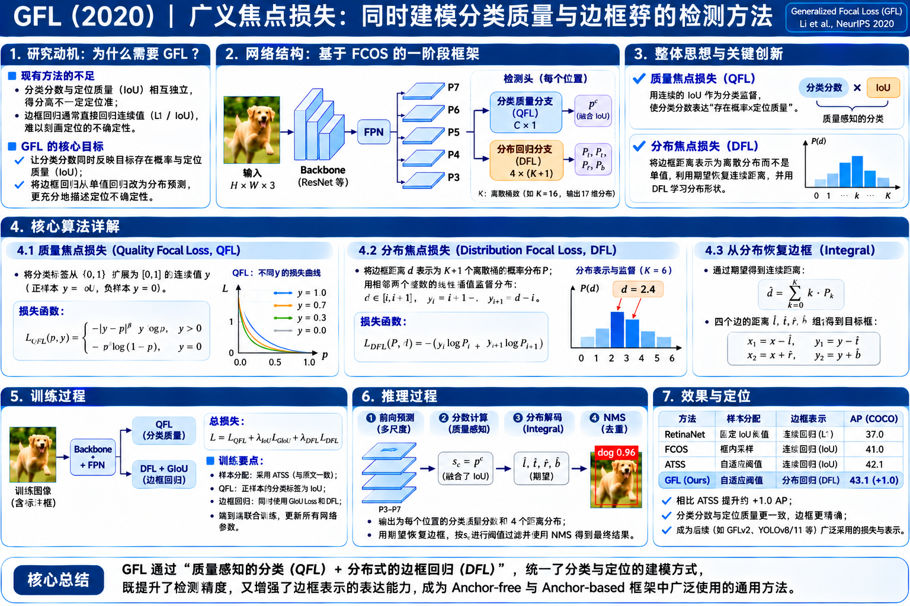

旧问题 A · 质量分支与分类分支分开训练
训练时各自学习；推理时却要相乘
分类 p = 0.90监督类别标签 1
×
质量 q = 0.40监督 IoU / Center-ness
→
NMS 0.36推理才组合
分类只被要求区分类别；质量独立学习，且多只在正样本上监督。两者推理时组合，可能产生训练目标与使用方式之间的错位。
经过 RetinaNet 的 Focal Loss、FCOS 的中心度、ATSS 的样本分配，密集检测器仍有两个基本问题：分类分数不一定反映框定位得好不好；边框回归通常只输出一个数，缺少对位置分布的表达。 GFL 通过 QFL 与 DFL 改变“预测什么、怎样监督”，而非发明新的 Backbone。

GFL 的两个改动分别来自分类质量的训练-推理不一致，以及传统位置回归表示的局限。
分类只被要求区分类别；质量独立学习，且多只在正样本上监督。两者推理时组合，可能产生训练目标与使用方式之间的错位。
对于遮挡、模糊或标注边界不清的目标，不同的边界位置可能具有不同概率。单数值回归无法显式表示这种分布。
GFL 的网络框架基本延续 ATSS / FCOS 风格的单阶段密集检测，真正变化集中在最后的输出表示和 Loss。
在每个特征位置，对 K 个类别分别输出 Sigmoid 分数。前景类别对应的目标值不再必然是 1，而是本位置预测框与 GT 的 IoU；其他类别以及背景候选为 0。
每个位置的左、上、右、下四个距离，各预测 n+1 个分布 logits。常用 reg_max=16，因此是 4 × 17 = 68 通道，而不是直接回归 4 个距离。
原来类别头学“是什么”，质量头学“框准不准”；GFL 让类别头学“这个类别的检测结果有多可靠”。
假设某个候选位置预测为狗：P(dog)=0.90，质量分支预测 q=0.40。推理时通常要将分数组合用于 NMS 排序。
两个输出各自得到不同监督，推理时却共同决定排序。这是论文研究的优化不一致问题。
假设预测框与狗 GT 的 IoU 为 0.73，则当前狗类别的训练目标就是 y_dog=0.73，猫、车等其他类目标为 0。推理时直接使用联合分数排序。
质量标签基于当前预测框与其匹配 GT 的 IoU；不是标签框的置信度，也不是中心度。实现中该 IoU 作为监督目标 detach。
保留 Focal Loss 对困难样本的关注，却把“与目标的预测误差”推广到连续标签。
其中 p = sigmoid(logit) 是某个类别的联合分数，y∈[0,1] 是这个类别的目标（背景/其他类为 0，前景 GT 类为 IoU），β 控制容易样本的权重衰减（原论文实验常取 2）。
−[(1−y)ln(1−p)+y ln(p)]：即使 y=0.73，也可直接计算；当 p 靠近 y 时越符合目标。
|y−p|β：距离正确目标越远，权重越大；当 p→y 时，额外权重趋向 0。
—
当 β=0 时，QFL 退化为连续标签 BCE（按 0⁰=1 的实现约定）。当 y=0 或 1 且 β>0 时，对应普通二分类形式的 Focal Loss（忽略 α）。
四边距离并非只有一个允许的整数位置。GFL 先学习概率分布，再通过加权平均恢复连续距离。
例如某条边的真值为 6.3 个特征层步长：最邻近的整数是 6 和 7。理想的局部分配是 P(6)=0.7、P(7)=0.3；加权期望得到 6×0.7+7×0.3=6.3，因此 17 个整数槽也能表达小数。
假设此层 stride=8，预测的距离 6.3 表示原图 50.4 像素；并不是每个槽天然表示 1 像素。
这是一条边的离散分布。四条边分别预测左 / 上 / 右 / 下，共 68 个数，经过四次 softmax 得到 4 个连续距离。
这里的 i=floor(y)，整数步长 Δ=1。DFL 对 GT 两侧的概率 求加权交叉熵，并不是对 17 个槽简单做普通 one-hot 交叉熵。
集中在 6.3 附近；积分得到 6.3，DFL 奖励邻近整数。
离散概率例子：0×0.475 + 12×0.525 = 6.3。均值相同，但质量分散在远离真值的两个位置。
只惩罚期望误差可能允许多种分布；DFL 显式促使概率集中到 GT 附近。
把每条边的分布做 Softmax + Integral，得到四个距离，再从特征点位置向四周展开。
(x,y) 是原图上的特征位置参考中心；s 是当前 FPN 层步长，(l̂,t̂,r̂,b̂) 是四个距离分布的期望（单位为 stride）。卷积头输出 68 维 → 四组 17 类 Softmax → 四个期望 → 一张 BBox。
本图在一个 560×320 的教学坐标系里做几何投影；中心选定为 (280,160)。当距离或 stride 较大时，框允许超出示意画布，真实推理再将框裁剪到有效图像边界。
ATSS 分配正负，GFL 定义预测的监督形式。重要的是把“离散标签构造”与“可微网络优化”分开。
真实类别 c 与 GT 框 B*；Backbone + FPN 输出五层特征。
按 Anchor 与 GT 的几何关系分配标签；正样本匹配一个 GT。
分类质量 K 分数；回归四条边的 17 槽分布，积分后解码 B。
正样本质量目标 y=IoU(B,B*)，视为 detach 标签；其他类别/负样本为 0。
QFL 监督全部有效位置；GIoU + DFL 只监督正样本；更新 Backbone、FPN、Head。
前景对应类别的目标是当前预测框与 GT 的 IoU。负样本及非 GT 类别的目标为 0。分类头的梯度通过 QFL 回传。
四组分布 softmax 后做加权求和，形成预测框 B，与 GT 框 B* 计算几何损失。
GT 的 l/t/r/b 距离分别归一化成 stride 单位，鼓励真值附近两个 bins 有正确概率。
原论文说明的典型值为 λ₀=2、λ₁=1/4（DFL 按四边平均）。实现中还可能以分类质量分数作为定位损失的权重，归一化细节随版本有所不同。
卷积、Sigmoid、Softmax、期望加权求和、QFL、DFL、GIoU（绝大部分正常几何区域）均存在梯度路径。
GT/Anchor 正负样本匹配、ATSS Top-k 分配、QFL 标签用的 IoU detach、NMS 后处理不需要反向传播。
QFL 学出的分数已编码类别与质量，直接用它筛选和排序预测框；回归分布经 Integral 解出最终位置。
FCOS 风格：class_score × centerness（具体实现可使用平方根）。GFL：类别质量已经合并为 一个分数，推理时直接用于排名，无需单独再乘一个质量预测。
每个位置产生 68 个回归 logits → 分成 4 组 17 维 → Softmax → 概率期望 → 转换为原图像素尺度的 l/t/r/b → BBox。最后按得分筛选并执行 NMS。
示例以直接乘积表示一类传统融合方式；FCOS 等实现的具体分数变换可能不同。
训练时直接为其赋予 IoU 质量监督，推理时直接用于筛选和排序。
把新思想放回 RetinaNet → FCOS → ATSS → GFL 的研究脉络中，关注它究竟改了什么。
| 工作 | 分类/质量表示 | 框表示 | 主要创新 |
|---|---|---|---|
| RetinaNet · 2017 | 类别 Sigmoid / Focal Loss | Anchor 回归 | 缓解前背景失衡 |
| FCOS · 2019 | 类别与 Center-ness 分离 | 点到四边 l/t/r/b | 密集 Anchor-Free 预测 |
| ATSS · 2020 | 沿用现有分类/质量设计 | 沿用检测头定位形式 | 自适应正负样本选择 |
| GFL · 2020 | 类别 + IoU 联合 QFL | 四边分布 + DFL + GIoU | 统一质量监督与分布化定位 |
| GFLv2 · 2021 | 进一步估计分布质量 | 进一步利用回归分布统计 | 定位质量估计的改进（不是本篇 GFL） |
从单独 centerness 分支到 QFL 联合表示；论文 Table 1(a)，在对应对比设置下。
传统 Dirac 定位表示与 GFL 的 General 分布 + DFL 对照；论文 Table 2(a)，非与左侧完全同一实验线。
论文报道 GFL ResNet-101 单尺度设置；论文同期对照 ATSS 43.6 AP。比较需保留实验设置前提。
能准确回答这几个问题，就说明已经建立了 GFL 的输入、预测、训练、推理闭环。
分类分数同时接受类别与预测框 IoU 的连续监督，训练与推理使用同一个质量感知分数；不需要推理时再乘独立估计的质量分数。
Softmax 得到每个离散位置的概率，Integral（期望）计算 ∑i·P(i)，例如 P(6)=0.7 与 P(7)=0.3 时得到 6.3。
GIoU 作用于积分后最终预测框的几何误差；仅有最终期望会有多种分布表示同一个值的歧义。DFL 直接监督靠近 GT 的概率形状。
它是 QFL 的监督标签，需要作为当前状态下的目标值；否则优化器可能通过改变回归预测而“移动目标”来最小化分类损失。框回归本身通过 GIoU 与 DFL 获得梯度。
不是必须。论文的方法可迁移到多类密集检测器；ATSS 风格的代码实现可用单 Anchor 作为样本匹配及回归参考点。l/t/r/b 表示本身是点到边的距离，不能单独推出训练样本的生成方式。
[1] Xiang Li et al., Generalized Focal Loss, NeurIPS 2020（原始 PDF）
[2] arXiv:2006.04388 · 原论文摘要与版本
文中互动实验的数值均为教学构造（根据论文公式实时计算），不是论文实际 COCO 样本。实验结果明确标注了来源与评测前提。